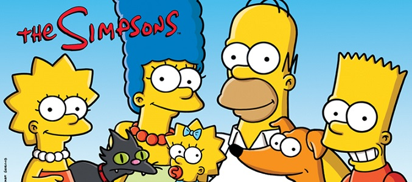
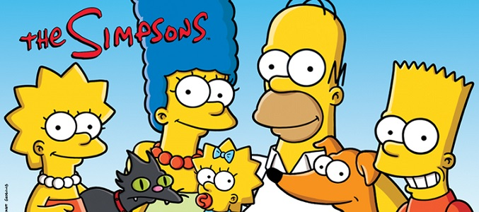

Durante la serie, varios personajes, algunos secundarios y otros menores, han muerto. Otros han sido asesinados de broma en los especiales de terror.
Antes del Comienzo de Los Simpsons Hubert Simpson, muere en un corto de The Tracey Ullman Show llamado "The Funeral"
Flashbacks
Clancy Bouvier, en Jazzy and the Pussycats. Marge dice que murió un poco después de haberse casado con Homer.
Snowball I, muere tras ser atropellado por un camión conducido por Clovis Quimby. La muerte es mencionada por primera vez en Simpsons Roasting On An Open Fire" con Clovis Quimby siendo mencionado como el asesino en "Treehouse of Horror III".
Orville Simpson, visto en el cielo por Bart en "Bart Gets Hit by a Car".
Milton "Ox" Haas, muere a causa de una hernia.
Sheldon Skinner, Arnie Gumble,Iggy Wiggum,Etch Westgrin y Giff McDonald, muertos en el desastre del día de los veteranos en 1979.
McAllister, muere en la montaña Murderhorn, posiblemente de hipotermia. Abraham Simpson se comió un pedazo de su brazo izquierdo Su cuerpo fue descubierto en la montaña por Homer en "King of the Hill".
Waylon Smithers, Sr., murió de envenenamiento por radiación.
En la segunda temporada la Sra. Glick menciona que su hermano Asa Glick murió en la Segunda Guerra Mundial.
Un hippie muere despedazado por Firulai por sorpresa, según el Sr. Burns en "Dog of Death".
En "The Secret War of Lisa Simpson", Lisa menciona que Emily Dickson se volvió loca y murió.
La asistente del gran Raymondo, murió tiempo atrás, según Raymondo en "The Great Simpsina".
La esposa de un Viktor De Ukrania, muere cuando la pistola de otro gangster le disparó, posteriormente, se muestra un flashback de su muerte en "The Falcon and The D'oh Man".
Temporada 1
Bart Simpsons, muere acosado por Nelson Muntz en "Bart the General" (alucinación de Bart).
Temporada 2
Beatrice "Bea" Simmons, muere debido que le explotó un ventrículo en "Old Money".
Temporada 3
Snuffy, hámster mascota de Lisa. Lisa recita un poema sobre su muerte en "Stark Raving Dad".
Spinal Tap, probablemente mueren en la explosión de su autobús en "The Otto Show".
Stinky y Wrinkles, Bart mata a los peces de la escuela con su yo-yo mientras intentaba hacer un truco.
Hámster desconocido, muere en la mesa de operaciones en "Dog of Death".
Probablemente, Firulai murió algún tiempo después de "Dog of Death".
Temporada 4
Gladys Bouvier, muere en "Selma's Choice".
Numerosos personajes mueren devorados por King Homer en "Treehouse of Horror III".
Numerosos personajes encontraron la muerte al caer de una escalera mecánica en "Marge vs. the Monorail".
Temporada 5
Boris Simpson, dejó a la familia Simpson con su casa cuando murió en "Homer Loves Flanders".
Temporada 6
Bleeding Gums Murphy, muere en el hospital por una enfermedad en "Round Springfield".
El Dr. Marvin Monroe;ya que se ve un hospital dedicado a Marvin Monroe y se ve su tumba en el entierro de Murphy, en "Round Springfield" (pero nada de eso es cierto ya que en la decimoquinta temporada aparece como un fan que quiere un autógrafo (aunque luego nunca volvió a aparecer))
Un hombre muere al caer en el mar de lava al tratar de llegar al teléfono público para contestarle a Bart Simpson en "Bart vs. Australia".
Un koala muere al ser electrocutado en "Bart vs. Australia"
Superdude, el hamster de la escuela, muere aplastado por una botella de agua en "Who Shot Mr. Burns?(Parte 1)".
Temporada 7
Un número desconocido de personas de Shelbyville, murieron cuando fueron golpeados por el reloj gigante del Sr. Burns en "Who Shot Mr. Burns?(Parte 2)"
Un venado muere comido por un león en "Lisa the Vegetarian"
La Oveja es comido por la aguila en "Lisa the Vegetarian"
Un Gorila Es Comido Por Un Tiburon en "Lisa the Vegetarian"
Tía Hortense, falleció un tiempo antes de "Bart the Funk".
Asa Phelps, muere en "Raging Abe Simpson and His Grumbling Grandson in "The Curse of the Flying Hellfish".
Sr. Estes, un asesor de publicaciones, murió y dejó a Lisa Simpson a cargo del anuario de la escuela en algún momento antes del episodio "Summer of 4 Ft. 2".
Temporada 8
James Bont, es asesinado a tiroteos por los guardias de Hank Scorpio en "You Only Move Twice".
Un Convicto, estaba a punto de ser ejecutado con la silla eléctrica de la prisión estatal de Springfield, hasta que el Huracán Barbara levantó el techo de la cárcel y tiró de el en el aire, posteriormente aterrizó en unas líneas de electricidad y se electrocutó en "Hurricane Neddy".
Frank Ormand, el hombre que le dio a Marge la franquicia de los pretzels, muere en un accidente automovilístico ebablemente por la falta de oxígeno ya que estaba metido en el acuario de los zapatos de Disco Stu. Stu explicó que no podía sacarlo de allí.
Shary Bobbins, fue la niñera mágica de los Simpsons, es mutilada por un avión.
Frank Grimes muere electrocutado en la Planta Nuclear de Springfield
Temporada 9
Capitán Tenille, posiblemente muere en "Simpson Tide".
Temporada 10
Pinchy, langosta mascota de Homer Simpson, Homer sin querer la metió en agua hirviendo y se la terminó comiendo.
Red Barclay, muere durante un concurso de comer carne en "Maximum Homerdrive".
Mamá pájaro, Bart Simpson accidentalmente le dispara con una arma silenciosa de Nelson Muntz en "Bart the Mother". Bart cuido de los huevos que habia en el nido, los cuales resultaron ser lagartijas
Troy McClure y Lionel Hutz aparecen por última vez en esta temporada en el episodio "Bart the Mother", ya que ambos personajes fueron retirados de la serie luego de la muerte de Phil Hartman.
Temporada 11
Maude Flanders, esposa de Ned, muere en "Alone Again, Natura-Diddily".
Cornelius Chapman, el residente de Springfield más viejo, muere en "The Mansion Family".
Algunos gerentes de "Laramie" y un piloto de helicóptero, mueren en el choque de helicóptero en "E-I-E-I-(Annoyed Grunt)".
Temporada 13
Profesor Huntington, muere de cancer en "La Taberna de Homero", él hizo su suicidio caminando al lago y luego aparece como fantasma.
Temporada 14
Probablemente, algunas tortugas "usadas", pudieron morir después de "The Great Louse Detective".
La muerte de Frank Grimes se repite en "The Great Louse Detective".
Horace Wilcox, muere de un ataque cardiaco cuando dijo "mi lengua tiene gusto a cobre" en "Mr. Spritz Goes to Washington".
Temporada 15
Abogado muere atropellado por Homero en "My Mother the CarJacker".
Hombre de buceo y peces mueren electrocutados en "The Fat and the Furriest".
Snowball II muere atropellado por el Mercedes de Hibbert en "I, D'oh-bot".
Snowball III muere ahogandose en el agua por atrapar a un pececito en "I, D'oh-bot".
Coltrane cae por la ventana en "I, D'oh-bot".
La muñeca de ojos de botón, asesina al jardinero (Lenny), en la película de Terror "The Redeadening" en "The Ziff Who Came to Dinner".
Temporada 17
David es partido por la mitad en "Treehouse of Horror XVI"
Un pequeño extraterrestre, muere en el intro de "Treehouse of Horror XVI" por culpa de Kang y Kodos.
Temporada 18
Amber Simpson, muere un poco antes en "Jazzy and the Pussycats".
El Señor de los Helados muere un ataque por 95 centavos.
Un niño muere por comer helado.
Anna Maria D'Amico, en "The Mook, the Chef, the Wife and Her Homer".
4 de Los Calabresi (archienemigos de gordo tony) mueren en una explosion de auto en "The Mook, the Chef the Wife and Her Homer".
Dante Calabresi Sr y Jr. y Big Alberto mueren de comida envenenada en el mismo episodio.
Película
El Dr. Nick Riviera, muere cuando le cae un trozo de vidrio de la cúpula (pero se le muestra vivo en otros episodios lo que quiere decir que era un chiste como el caso de Marvin Monroe.
La banda Green Day muere cuando se hunde el barco donde la banda está teniendo su presentación en Springfield.
Todos los peces y 1 anguila mueren electrocutados por el invento de Homer.
Temporada 19
Sideshow Bob tiene una falsa muerte en "Funeral for a Fiend" (ya que todo era un plan secreto para liquidar y eliminar a Bart del mapa)
Mona Simpson, muere de causas naturales por Homero que no se disculpara en "Mona Leaves-a", pero murió por culpa de 5 policias.
Temporada 20
Grand Pumpkin muere al ser derrotado por Tom Turkey en "Treehouse of Horror XIX".
Un niño, es comido por Tom Turkey en "Treehouse of Horror XIX" *Homer asesina diversas celebridades en "Treehouse of Horror XIX".
Temporada 22
Fat Tony le da un paro cardíaco y muere de un infarto en "Donnie Fatso".
Raymond Bird muere al entrar en el estomago de Santa's Little Helper en "How Munched is that Birdie in the Windown?".
Temporada 23
Viktor, falleció cuando Wayne Slater le tiro una estalactita (trozo) de hielo en el corazón en "The Falcon And The D'oh Man".
Los gangsters de Viktor, murieron cuando peleaban con Wayne Slater en "The Falcon And The D'oh Man".
La Sra. Glick muere asesinada por una foca bebé robot en el episodio "Replaceable You".
Temporada 24
Steve Mobbs, muere en el episodio "A Tree Grows in Springfield".
Los equipos del gordon muere atacado.
El Gordo muere disparado.
Temporada 25
Edna Krabappel, murió desconocidamente en "Four Regrettings and a Funeral" (sin embargo, ella fue atropellada por Homer, ya que Ned Flanders se lo dijo a Bart en "Holidays of Future Passed". La razón de su muerte, fue el fallecimiento de Marcia Wallace, su dobladora original.
Chip Davis, muere en el episodio "Four Regrettings and a Funeral".
Lyla Markenston, muere en "Four Regrettings and a Funeral".
Temporada 26
Hyman Krustofsky, rabino y padre de Krusty, muere en por un paro al corazón en "Clown in the Dumps".
Manjula Nahasapeemapetilon, se supone que muere durante los créditos de "Blazed and Confused", mientras muestran una foto de Jan Hooks, su dobladora original, que murió en el año 2014.
Albert, murió de un paro al corazón en "Walking Big and Tall", tras haber bajado de su silla.
Temporada 27
Nibbles, el hamster de la escuela, muere por que lisa lo descuidó por demasiado tiempo por cuidar a otros animales como ayudante de un veterinario en "Lisa the Veterinarian"

 
